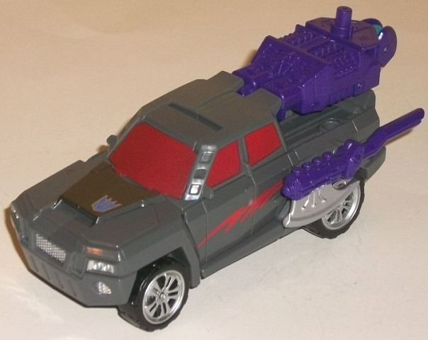
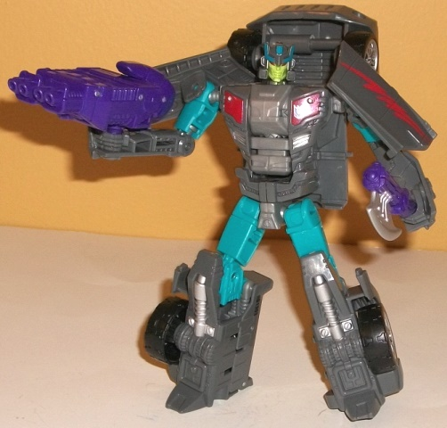
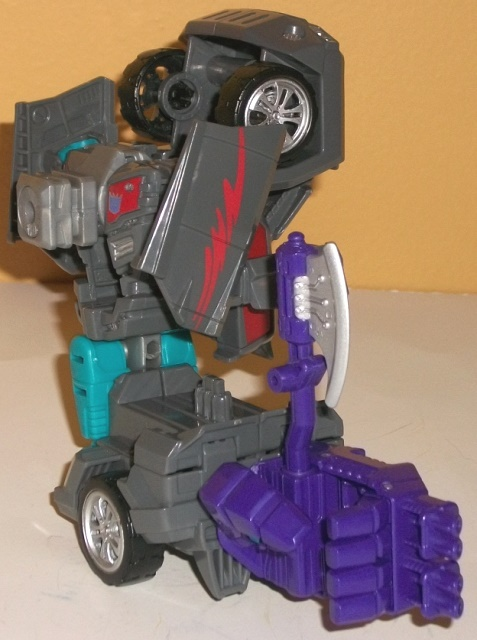
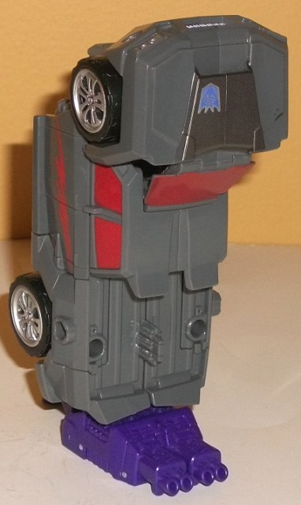

Allegiance
: Decepticon
Size
: Deluxe
Difficulty of Transformation to Robot:
Easy
Difficulty of Transformation to Leg
:
Very Easy
Difficulty of Transformation to Arm
:
Very Easy
Color Scheme
: Moderately dark gray,
moderately dark metallic red, and some silver, black, royal purple, dark
metallic gunmetal gray, milky gray, light aquamarine, and light glossy
pea green
Rating
: 7.7


Offroad is the "newbie"
member of the Stunticons-- like
Alpha Bravo
,
he was added to give his group a bit more variety in terms of alt modes,
what with Offroad being a pickup truck instead of another car. The proportions
in this mode are largely pretty darned good, though the "truck bed" could've
used a bit more hollow space. On a minor "robot kibble" note, the front
tips of the robot feet are also visible from a rear view-- but again, not
a big deal. Otherwise, Offroad is kibble-free in this mode. Also like Alpha
Bravo, Offroad has the same general color scheme as the team member he's
"replacing"-- in this case, Wildrider. Like Wildrider, Offroad's color
scheme in this mode is almost entirely a moderately dark gray, with metallic
red windows. For a bit more color variety, there's a nifty-looking red
"squiggle" along the side doors, not to mention the silver paint apps on
the wheels, front grill, and headlights. (The rear end is, sadly, missing
any sort of paint apps whatsoever.) As a whole, this is a pretty bland
color scheme, to be honest. The red should've been lighter and more plentiful
for better contrast, and some paint apps-- like the gunmetal dark gray
in the center of the front hood-- don't contrast enough from the main gray
to really contribute much to the color scheme. Good thing Offroad has his
weapons in royal purple, which DO help to add a good amount of color variety.
He's got the same "hand/foot/gun" accessory that every CW deluxe has, though
instead of simply plugging into a 5mm port, this one actually slots into
place pretty well behind the middle section, covering up the truck bed
with a lot of engine-like mold details (for gun mode, the front of the
weapon has what looks like four barrels). Offroad also has an axe, with
some mold details that make it look it's part of an exhaust pipe or some
part of an engine, as well. This latter weapon can fit into any of the
5mm ports on the toy-- there are two on the sides above the rear tires,
and two on the sides of the truck bed-- however, you can't plug the axe
weapon into storage on the bed unless you remove the purple hand/foot/gun
weapon from that area. For mold detailing outside of the weapons, though,
this mode is a little bit bland, with mostly the bare minimum of mold detailing
on his vehicle bits (car doors and the like), though there's a fair amount
of mold detailing on the front grill and headlights. Particularly since
this a truck, I feel a bit more mold detailing on the roof or the like
would've helped make this mode look a tad more interesting.
Offroad's transformation
is pretty straightforward-- you just fold the front section of the mold
back and then fold out the arms from the sides and the legs from the back
end. It may not be a particularly innovative transformation, but the end
result looks pretty decent. Offroad's proportions are pretty solid in this
mode as well-- the arms are just a tad skinny, but otherwise he looks nice.
I do wish the truck front hid behind the back a bit better-- it sticks
up from above the head a bit too much for my liking. In principle I like
the side doors on Offroad's shoulders as they make for nice "shoulder armor",
but they're a bit too large and square to the point where they interfere
with shoulder articulation a fair amount, clashing with the truck front
on his back. Any other vehicle bits are minimal and easily ignored, like
the little bits of truck mode sticking out from the back sides of his waist
or the fact that his lower arms are merely molded into small sections of
the truck mode bed. The mold detailing for this mode is much-improved--
in addition to some fake "windows and bumper" chest details, large pistons
and wheel-like details on the feet look nice, as do little detailed "cracks"
in the armor on his lower arms. Nothing beats Offroad's head sculpt-- it
looks darned CREEPY. Apparently Offroad was originally intended to be Ruckus--
in homage to the G1 character-- but that was sidelined for whatever reason.
Thus, he largely has Ruckus' headsculpt, but in different colors. They
could NOT have picked a creepier expression on his face-- he has just the
slightest, creepiest smile on his mouth, and there's some mold detailing
around his mouth that makes it look like he has an extended,
Dark Knight
Joker-like grin. Couple with that with the light pale green face-- a color
that's found nowhere else on the toy-- and it really ups that creepiness
factor. The color scheme is much improved in this mode when compared to
the vehicle mode-- he's got a really nice shade of light aquamarine used
for his upper arms, upper legs, and a few paint apps on his head. More
silver and red paint apps on his chest and legs also help to break up the
colors more, and as a whole Offroad-- with the green and aquamarine-- has
just a bit of a "G2 loud" feel to his color scheme. For articulation, Offroad
can move at the neck, shoulders (at one point, two if you include the shoulder
panels-- which is limited because of the aforementioned shoulder panels
crashing into the backpack), elbows (at two points), waist rotation, and
movement at the hips (at two points), and knees. Roughly average articulation
for a Combiner Wars deluxe, but still pretty good-- his feet are luckily
long as well, so his slightly back-heaviness because of his truck backpack
doesn't affect his stability much.


Offroad's arm mode follows
the CW norm of being his robot mode with the legs clamped together to form
the lower arm while the combiner connection peg in the chest folds out
and the arms fold into the shoulders a bit. However, for Offroad, his arms
are REALLY badly hidden or melded into his overall shoulder silhouette.
They're folded backwards at the elbow joint from their robot mode position,
and are SUPPOSED to clip into little slits along the windows, but they
don't really grip tightly at all (thankfully, the joints themselves are
reasonably tight). These lower arms also poke out pretty obviously in front
of said windows on the upper arms, and generally just look obnoxious. The
door panels on Offroad's upper arms also stick out to the sides of the
shoulder a bit and make it a bit wider than I'd like. The truck front on
the robot back/upper shoulder does look good and gives some nice mass there,
however. Offroad has the same articulation in this mode as pretty much
any other CW deluxe-- he can move at the shoulder (at two points), elbow
(at two or three points, depending on whether the robot knees are facing
forward or not), wrist, thumb (at two points), and at the base of his four
fingers (all moving as one joint). Of note is that on my copy of Offroad,
the legs don't hold together as firmly as lower arm as on most other CW
deluxe arm modes, though I haven't seen widespread reports of this, so
it could just be a rare occurrence.
Offroad's leg mode is
literally his vehicle mode stood up on its back end with the foot piece
pegged in, the combiner peg rotated up from the chest, and the front of
the truck mode kept folded back as it is in the robot and arm modes. As
such, there's not much to say here, other than it looks like a pretty solid,
kibble-free leg. The front of the truck mode actually covers up the obvious
combiner port connection behind it and gives a bit more of a "kneecap"
look to whatever gestalt he's a leg of-- simplistic or not, this is definitely
the better of Offroad's limb modes. For articulation, his foot can rotate,
and the knee joint can move at two points.
Offroad does a few neat
things-- such as his remarkably solid leg mode and incredibly creepy headsculpt--
but largely there's nothing much to differentiate him from other CW deluxes
in terms of his general transformation and proportions. I do love the added
aquamarine to the color scheme, but by and large he also looks a bit boring
color-wise, and those shoulder armor bits on his arms are pretty annoying
when it comes to movement. His arm mode is also one of the worst of any
CW deluxes'. It's not like there's a bunch of other truck CW deluxes, and
he's a new character which is a positive for me, but he's not going to
wow many-- one of the weaker CW deluxes overall (though that says more
about the strength of the CW deluxe molds as a whole than how "bad" this
mold is).
Decepticon Operational Status Update,
reported by Soundwave:
Decepticon Offroad is the newest member
of the Stunticons, and while he's a "necessary evil" for the Stunticons
to combine into their gestalt form, the rest of the crew aren't sure they
totally trust their new teammate. Exuding complete confidence and deadly
charisma, he stalks his opponents with unyielding tenacity. His fighting
style is as exacting as it is ruthless, spinning his Energon hatchet to
deliver terrible damage with frightening efficiency. His vehicle mode lives
up to his namesake, just as comfortable tearing down the highway as turning
directly off of it. With fellow Stunticons forms Menasor.
CONCLUSION: Combat approved and endorsed.
HISTORY (extracted from compulsory
biographical download):
Decepticon Offroad was handpicked by
Motormaster to replace a fallen Stunticon. The other teammates have been
slow to accept him, mainly since he was instantly at ease in his new role.
Even worse, why has he chosen to emulate the colors of the fallen Stunticon?
Is that tribute or sacrilege? Only Decepticon Offroad knows for sure. Forms
either an arm or leg of Menasor, the combined form of the Stunticons.
Review by Beastbot